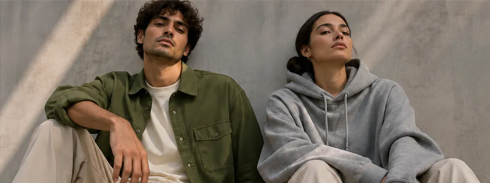

Perspective
Gender-Neutral Fashion: Why Unisex Essentials Work for Everyone
A closer look at unisex clothing, comfort and personal expression in everyday style.
This article contains Amazon affiliate links.

Fashion is personal. So why should the clothes we wear always be defined by gender?
For years, fashion has been organized into men's and women's clothing. But personal style doesn't always fit neatly into those labels. Gender-neutral fashion offers another way to think about getting dressed: start with fit, comfort and self-expression rather than the category on a tag.
At FORME, that idea shapes our approach to everyday essentials — clean silhouettes, versatile colors, and pieces that can be styled more than one way.
What is gender-neutral fashion?
Gender-neutral fashion is clothing designed or styled without relying on traditional gender-specific labels. Rather than prescribing who should wear a garment, it leaves room for people to choose what suits their bodies, preferences and lifestyles.
Think relaxed trousers, oversized shirts, uncomplicated T-shirts and flexible layers. Their appeal comes from how they look and feel — not from which section of the store they hang in.
A brief history: unisex fashion is not new
Unisex fashion has roots that go back decades. Designers in the 1960s and 1970s experimented with silhouettes that challenged conventional ideas of masculine and feminine dressing — Rudi Gernreich's unisex designs are one well-documented example. Today the conversation continues through clothing that makes more space for personal choice. For historical context, see the University of Maryland and Fashion History Timeline sources at the end of this article.
Why unisex everyday essentials make sense
1. Personal style comes first. A relaxed overshirt can be worn buttoned, open over a tee or layered over a hoodie. The wearer — not the label — decides how it looks.
2. Comfort and fit matter. Comfortable hoodies, relaxed trousers and simple tees become reliable staples. But “unisex” doesn't mean one size or shape fits every body. Check garment measurements and experiment with proportions until it feels right.
3. Versatility makes styling easier. Neutral colors such as bone, grey, stone and olive work together without much effort. An olive overshirt changes the mood of a basic tee-and-trouser outfit; a grey hoodie makes the same trousers feel more casual.
4. Less about labels, more about you. Gender-neutral dressing changes the shopping question from “Who is this meant for?” to “Does this work for me?” It puts the focus back on the person wearing the clothes.
How FORME brings gender-neutral style to life
FORME's debut concept collection is built around four unisex everyday essentials:
- Essential Tee — a clean foundation for easy layering.
- Everyday Hoodie — relaxed comfort for casual days.
- Relaxed Trouser — a versatile silhouette that works with different tops.
- Studio Overshirt — a structured layer worn open or buttoned.
Together they reflect FORME's idea that simple clothing can offer plenty of styling possibilities, and their muted palette makes mixing and matching feel intuitive. (Product links go to comparable pieces on Amazon.)
How to build your own gender-neutral wardrobe
Start with what you already own. Choose a few pieces that fit your routine, then look for gaps instead of buying an entirely new wardrobe. Try a relaxed tee with structured trousers, or a boxy overshirt over a fitted base layer. Use shoes and accessories to change the mood of an outfit.
Most importantly, pay attention to how the clothing fits you. Personal style isn't a rigid formula; it's finding combinations you want to wear again.
Style without limitations
Clothing should make everyday life simpler while leaving room for individuality. Our philosophy says it best: less noise, more you.
Sources and further reading
FORME is a concept brand built for a graduate digital marketing course. Product links go to comparable garments sold by third parties on Amazon. They are affiliate links: as an Amazon Associate, FORME earns from qualifying purchases.